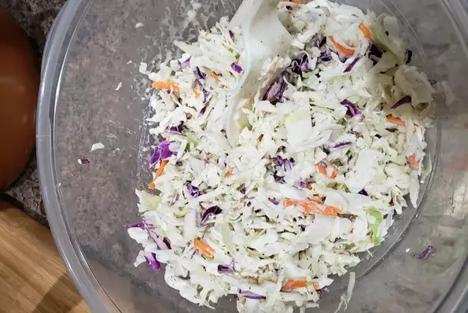

Easy Coleslaw Dressing

Description
A creamy coleslaw dressing that can be made with ingredients you already
have! You can pour it immediately over a 14-ounce package of coleslaw mix
or refrigerate until needed.
Ingredients
2 tablespoons white sugar
1 ½ tablespoons lemon juice
½ teaspoon ground black pepper
Steps
Whisk mayonnaise, sugar, lemon juice, vinegar, pepper, and salt together
in a bowl until smooth and creamy.